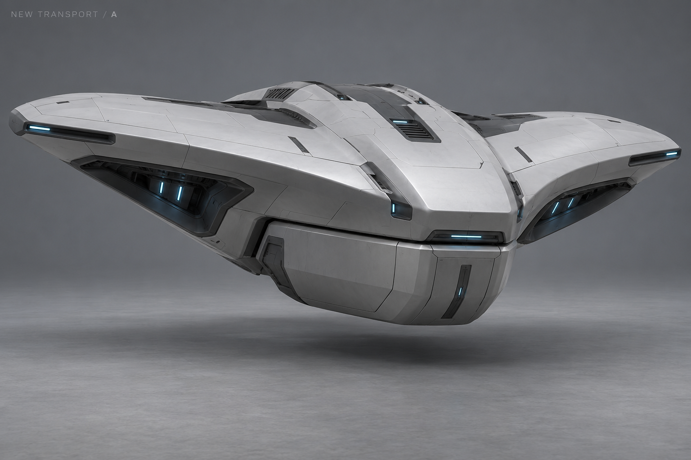
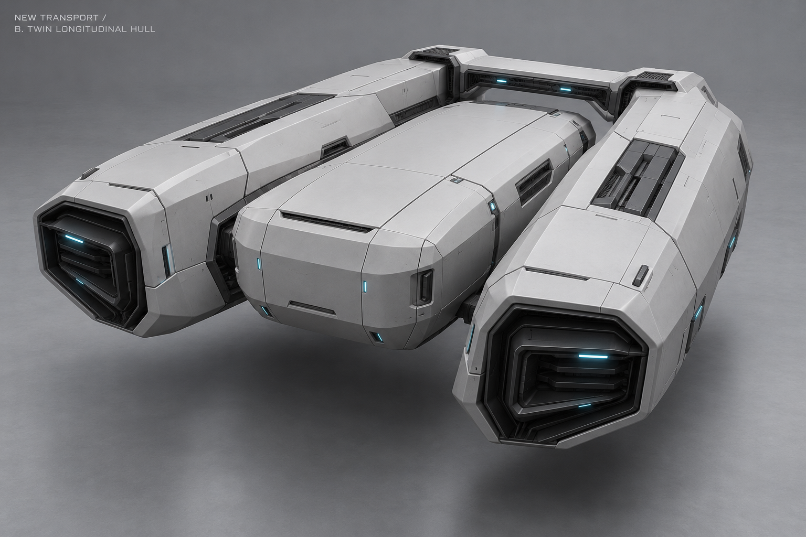
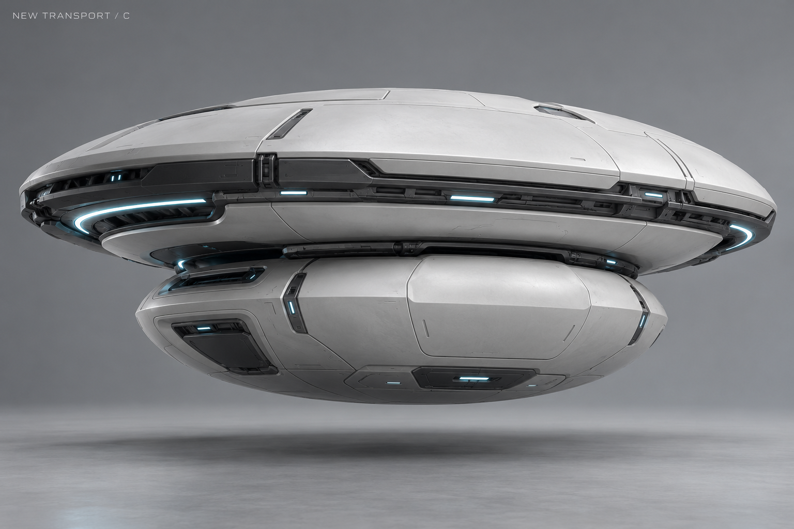
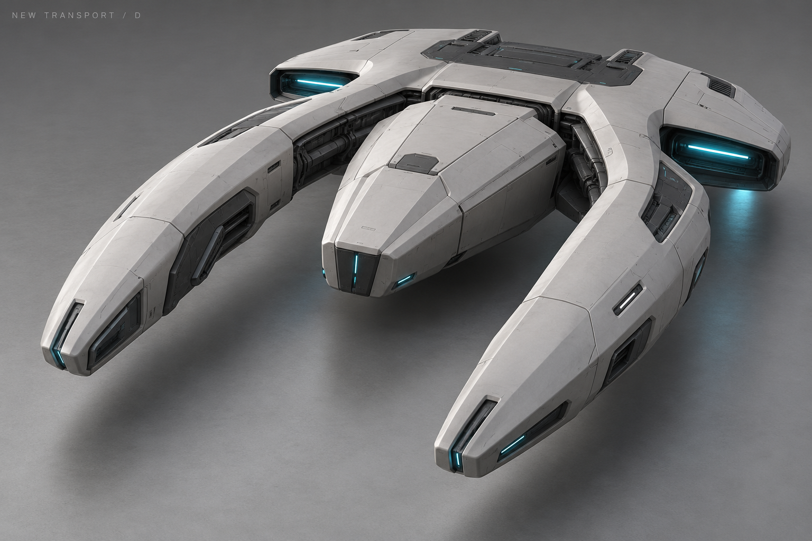
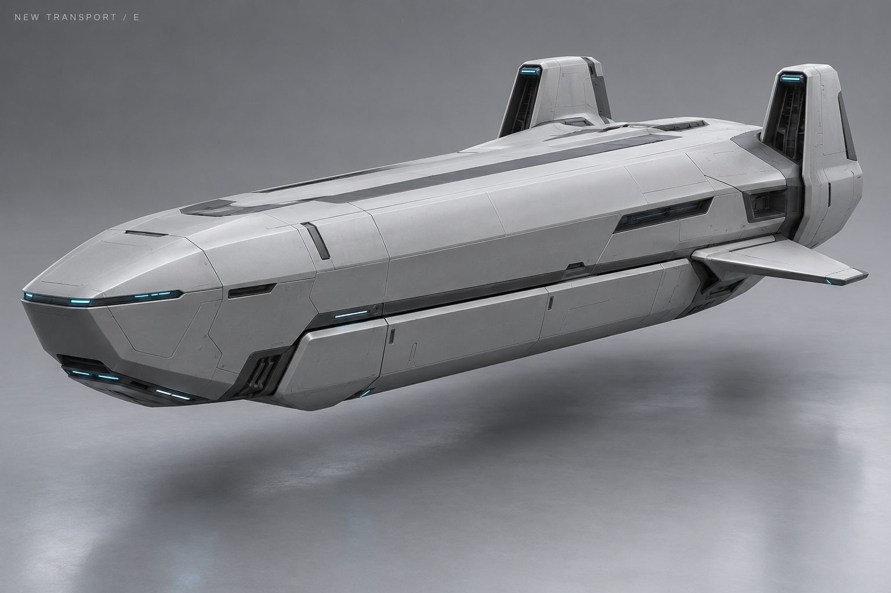
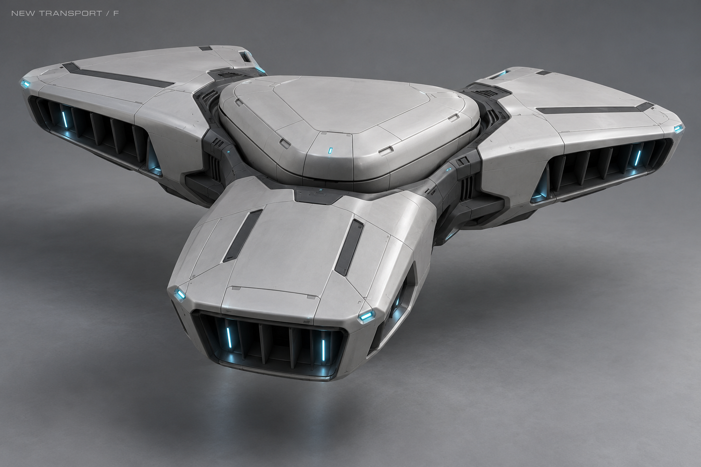
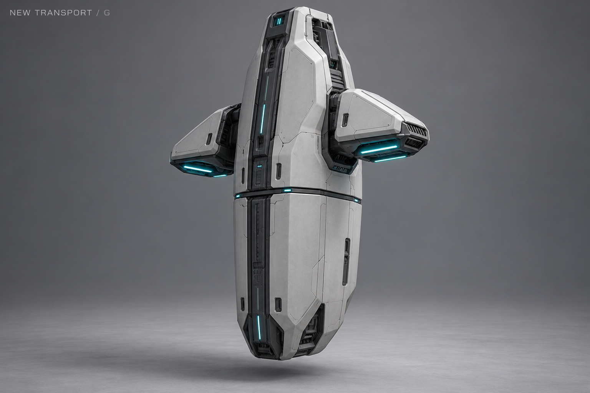
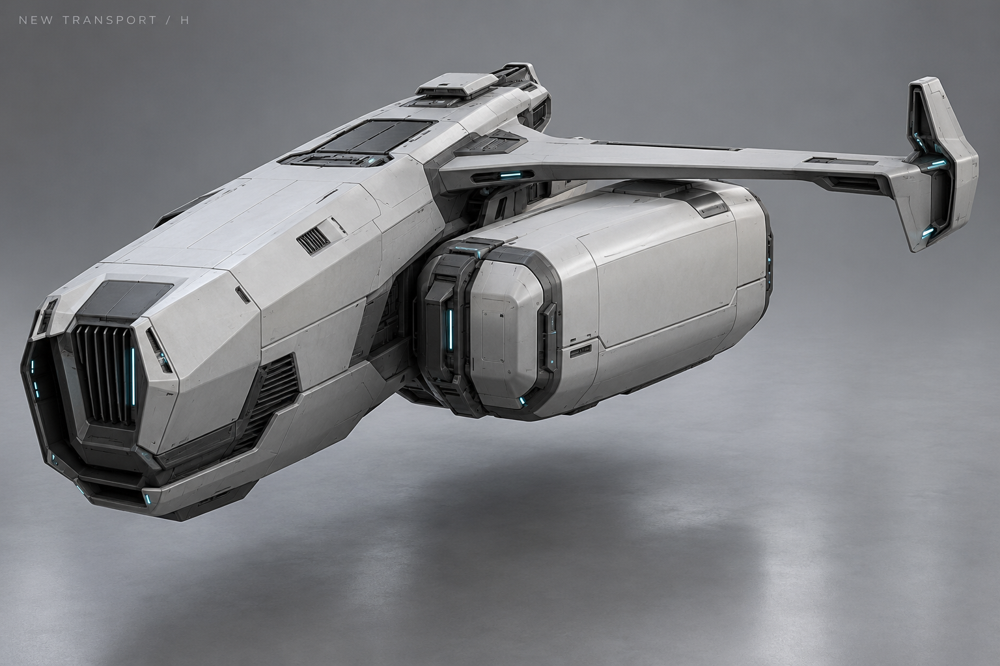

A · Скат


Широкий низкий несущий корпус; съёмный объём встроен в нижний киль.
История: вариации G1–G6, выбран исходный G
Выбранный G · ракурсы для моделирования с капсулой и без неё · OBJ
28 октября 2026 · восемь направлений A–H · выбран исходный G; остальные варианты — история.
Прежняя внешность квадрокоптера с нижним контейнером снята с направления. Здесь разные архитектуры, без обязательных четырёх роторов, репульсорных шайб, прямоугольного ящика или прежних пропорций C. Сохраняются чистые панели Резонанса и механическая идея отделяемого транспортного объёма. Названия — только метки поиска.
Исходный G принят как основной визуал. Погрузка, отделение модуля, лечение, полёт без него и формирование рампы ещё не показаны; картинки не задают вместимость, скорость и готовую кинематику.

Широкий низкий несущий корпус; съёмный объём встроен в нижний киль.

Два продольных двигательных корпуса, между ними — центральный съёмный модуль.

Две состыкованные линзообразные оболочки: верхний носитель и нижняя грузовая капсула.

Открытая подкова с центральным съёмным клином.

Вытянутый челнок; отделяется нижняя часть центрального корпуса.

Три несущие лопасти вокруг округлого треугольного модуля.
Выбрано автором · исходный G · закрытая капсула

Высокий вертикальный киль, грузовой объём образует нижнюю часть.

Асимметричный носитель: крупный двигатель с одной стороны, малый балансир с другой.